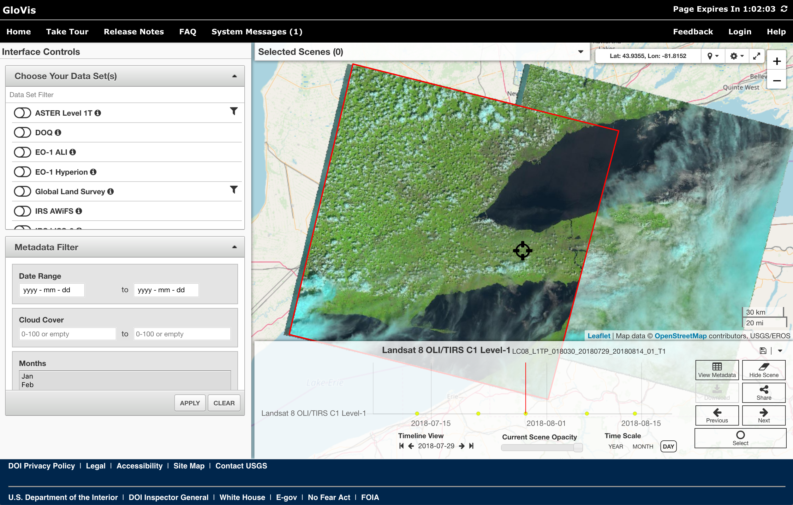

Part 1: Acquiring Satellite Imagery
Satellite data can be acquired from a large number of locations, depending on application needs. Before you begin a project involving satellite imagery, you should consider several factors, including: the type of sensor you require (e.g. multispectral imagery, radar data, LiDAR data, etc.), the necessary spatial resolution, temporal factors (e.g. do you need an image for a specific date or time of year?), and your budget for acquiring imagery. There are many commercial providers of satellite imagery and the cost per km2 of data can vary significantly. There also several sources of free satellite imagery, which, depending on your project constraints, may well be suitable.
The United States Geological Survey (USGS) are an excellent source of freely available satellite imagery data. The USGS are responsible for storing and disseminating many of the archived datasets from NASA satellites. There are two online data portals that the USGS currently operate to disseminate publicly available imagery, including the Global Visualization Viewer (Glovis) and EarthExplorer. Visit the USGS Global Visualization Viewer web site at http://glovis.usgs.gov/

This is an excellent example of an online data warehouse for satellite imagery. Like many of these sites, you need to register before you are able to download the available data. We will not need to do this at the moment because even without registering, the site will allow users to examine historical and recently acquired images and assess their quality.
Examine each of the data sets that are available under the 'Choose your data sets' menu. Not all of these data are available free-of-charge, and not every data set is available to users outside of the U.S., but many are. If you click on the ‘Data Descriptions’ link from within the sub-menu of any of the data sets, you will be able to see what data is available at no charge. The more interesting data sets include the ASTER, EO-1 ALI, EO-1 Hyperion (hyperspectral data), and the various available Landsat 5 TM, Landsat 7 ETM+, and Landsat 8 Operational Land Imager (OLI) collections. Select the Landsat 8 OLI option. Now navigate to the Guelph area. Select the image tile that contains Guelph and most of the Greater Toronto Area. You will be able to view all of the images available in this collection corresponding with this location, scrolling through the timeline of acquisition dates at the bottom of the map. Notice that the image ID, scene cloud cover (CC) percentage, and date are given for each image.
The US-operated satellites are not the only source of remotely sensed imagery. Notably, the European Union also operate a number of earth observation satellites, including the Sentinel 1 and Sentinel 2 satellites which provide fine-resolution data (up to 10 m) freely. Like the Landsat program, the Sentinel program provides valuable data for many types of remote sensing applications.
Questions for Part 1
1.1. What is meant by the row and path of a scene? What is the row and path of the scene that Guelph is contained within? (2 marks; hint, you should read the materials linked to in the introduction of the lab assignment.)
1.2. Provide the details (i.e. ID, scene cloud cover, quality, and date) of each of the images with the lowest cloud coverage in each of the images from from 2015 to 2021. What was the cloud cover and image quality (an index reported in the image metadata) of the Landsat 8 OLI image acquired on July 2, 2020? (7 marks)
1.3. What are the spectral resolutions, in μm, of the each of the Landsat 8 OLI sensor band data, i.e. what range of wavelengths does each band cover? (2 marks; again, you'll need to do a bit of digging in the assigned readings.)
1.4. What is a panchromatic band? How does its spectral resolution compare to that of the other multispectral bands within the Landsat 8 dataset? (2 mark)
1.5. Like the Landsat 8 OLI sensor, the Sentinel-2 satellite images Earth across a wide section of the electromagnetic spectrum and with varying spatial resolutions. What are the spatial resolutions (pixel size) of each of the Sentinel-2 bands? How does this compare with the spatial resolution of Landsat 8 data? (5 marks)